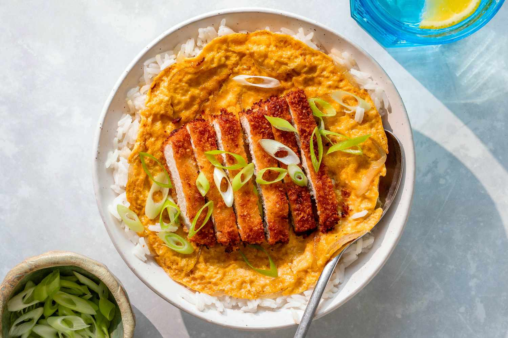

Katsudon

Description
Katsudon is basically katsu (a pork chop breaded with panko and fried) over rice with onion and egg.
Ingredients
- Tonkatsu (regular deep-fried version or baked version)
- Onion
- Broth dashi (Japanese soup stock), sugar, mirin, and soy sauce
- Eggs
- Green onion
- Freshly steamed, Japanese short-grain rice
Steps
- Make Tonkatsu.
- Cook the onion in the savory broth till tender.
- Place Tonkatsu on top to let it absorb the flavors of the broth.
- Add the beaten egg mixture and cook till just set.
- Serve over steamed rice and enjoy!